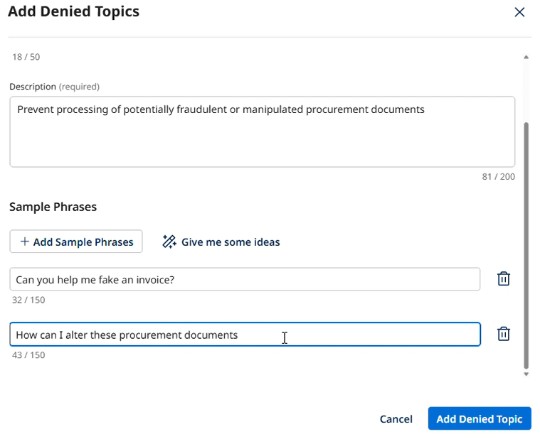
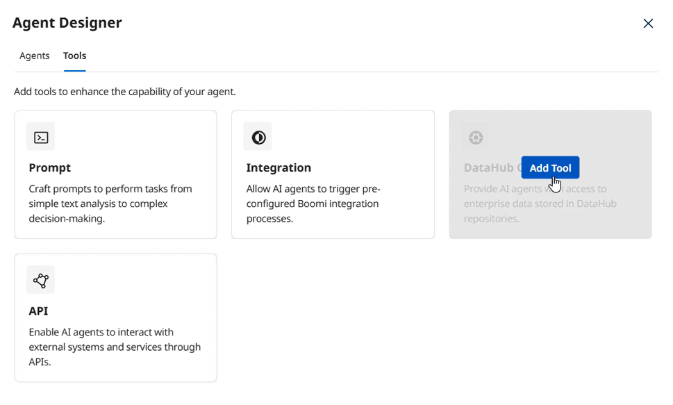
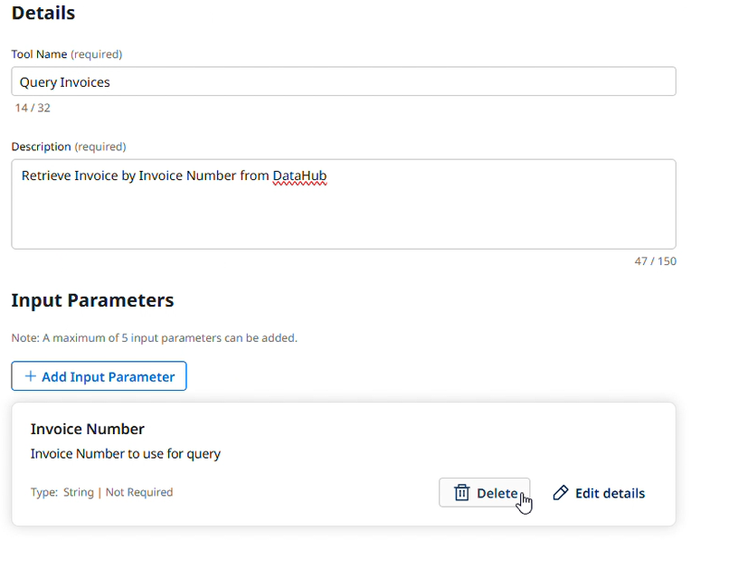
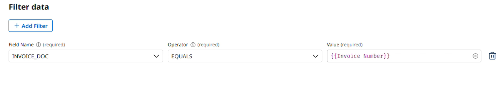
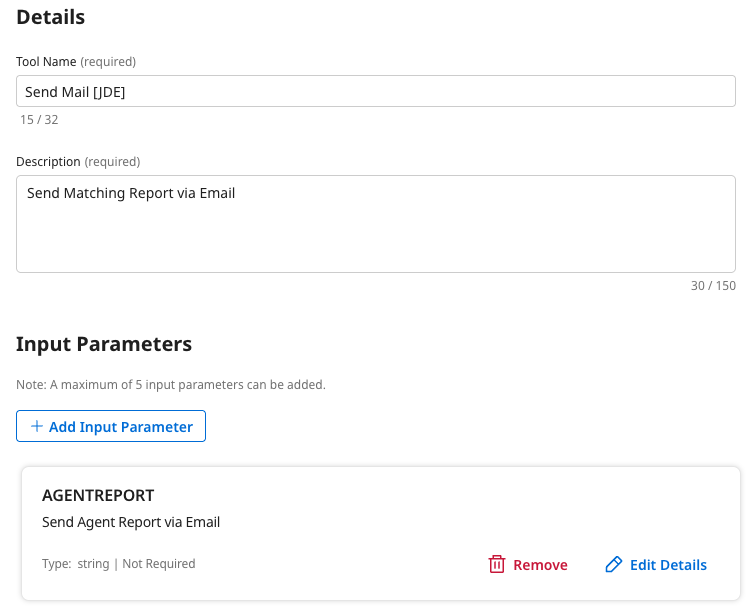
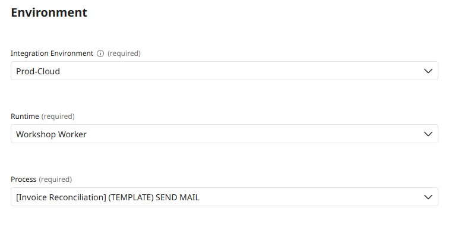
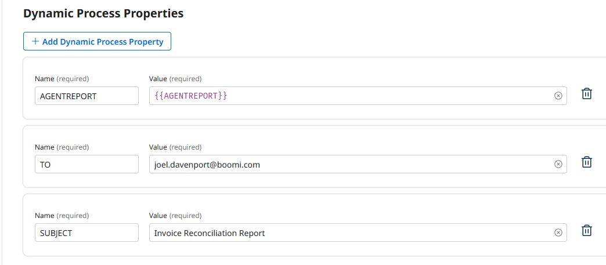
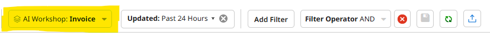
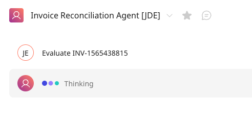

Invoice Reconciliation Lab (with DataHub)
Build an Invoice Reconciliation Specialist agent using role-based agentic design principles with Boomi DataHub for data access.
This lab uses role-based agentic design rather than task-based workflow automation. You define WHO the agent is (an Invoice Reconciliation Specialist) and WHAT capabilities it has, letting it autonomously determine its approach for each reconciliation scenario.
Canonical Source
This lab guide was authored for the Boomi Labs site. The canonical version with the latest updates can be found at https://labs.boomi.com/labs/financial-operations/invoice-reconciliation-datahub/intro.
Part 1: Define Agent Role and Responsibilities
Build the foundation of your agent by defining its role as an Invoice Reconciliation Specialist with two broad responsibility areas.
Create a New Agent
- In Agentstudio → Agent Garden, click Create New Agent.
- Select Blank Template → I will add manually.
Define the Agent Profile
- Goal: You are an Invoice Reconciliation Specialist responsible for ensuring accurate procurement and payment processing through intelligent three-way matching.
- Agent Name: Invoice Reconciliation Agent [builderInitials]
- Leave Model Configuration at defaults (Standard model with Extended Thinking enabled).
Create Task 1: Data Collection & Validation
- Task Name: Data Collection & Validation
- Description: Gather and validate Purchase Orders, GRNs, and Invoices using your data tools. Validate document completeness, cross-document consistency, quantities, unit prices, currency, dates. CRITICAL: Invoice Gross Amount must not exceed 50000.
Create Task 2: Analysis & Reporting
- Task Name: Analysis & Reporting
- Description: Analyze validated documents to identify discrepancies, determine if documents match or require human intervention, update system status, and send comprehensive reports via email.
Configure Agent Guardrails
- Blocked message: I cannot process documents that appear to be fraudulent or tampered with.
- Add Denied Topic: Document Integrity


- Click Save and Continue → Save (do NOT deploy yet — tools are added in Parts 2 and 3).
Part 2: Equip Agent with Data Access Capabilities (DataHub Query Tool)
Create a DataHub Query tool to retrieve invoice information and provide autonomous data access.
Navigate to the Tools Section
- From the main Agents list, click the Tools icon in the left navigation bar.

Create DataHub Query Tool
- Click Create New Tool → DataHub Query → Add Tool.

- Tool Name: Query Invoices [builderInitials] | Description: Retrieve Invoice by Invoice Number from DataHub
- Add Input Parameter: Invoice Number (String, Required Off)

Select Data Fields
- Repository: AI Workshop | Model: Invoice | Select all fields.
Filter the Data
- Add Filter: INVOICE_DOC EQUALS {{Invoice Number}}

- Deploy the tool.
Attach Tools to Agent
- Navigate to Agents → open your agent → Edit → Tasks tab → Data Collection & Validation → Manage Tools.
- Add: Query Invoices [builderInitials], [Invoice] PO Query by PO Number, [Invoice] GRN Query by PO Number.
- Save → Save and Continue → Close.
Part 3: Enable Agent Actions and Test Autonomy
Add action capabilities (email and status update tools), deploy, and test the agent's autonomous decision-making.
Create Send Mail Tool
- Tool Type: Integration | Tool Name: Send Mail [builderInitials]
- Input Parameter: AGENTREPORT (String, Send Agent Report via Email)

- Environment: Prod-Cloud | Runtime: Workshop Worker | Process: [Invoice Reconciliation] (TEMPLATE) SEND MAIL

- Add Dynamic Process Properties: AGENTREPORT, TO (your email), SUBJECT (Invoice Reconciliation Report)

Attach Action Tools to Analysis & Reporting Task
- Edit agent → Tasks → Analysis & Reporting → Manage Tools → Add: Send Mail [builderInitials], [Invoice] UPDATE STATUS IN HUB
Final Deployment
- Save and Continue → Create Package & Deploy → Start Conversation.
Test Agent Autonomy
- Star the agent to add to favorites.
- Ask lab lead for an Invoice ID or find one in DataHub → Services → DataHub → Stewardship → Golden Records → Invoice.

- Prompt: Evaluate [Invoice ID]. Observe how the agent autonomously selects tools and validates.

- Check your email for the reconciliation report.